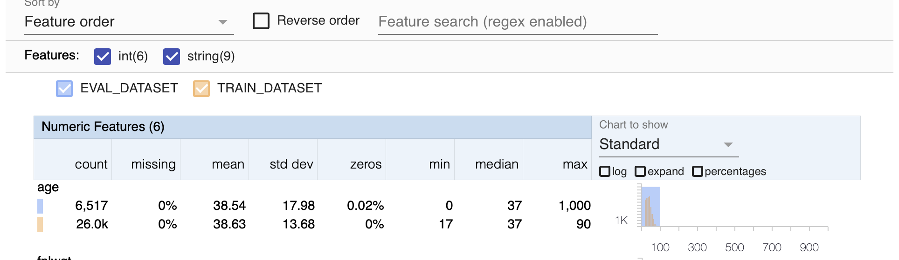

이번 자료에서는 TensorFlow Data Validation (TFDV)의 사용법에 대해 알아볼 예정입니다. 이는 TensorFlow Extended (TFX)라이브러리의 일부입니다.
TFDV는 대용량 ML 데이터를 이해하고 검증하고 모니터링하는 데에 사용됩니다. 이는 다음과 같은 정보를 제공해줄 수 있습니다.
데이터의 통계량
Train 데이터의 요약
Train 데이터와 Test/Validation 데이터의 차이
비정상 데이터 검측 및 수정
다음은 일반적인 TFDV의 워크플로우입니다.

위에서 볼 수 있듯이 TFDV는 train 데이터의 통계량을 계산할 수 있고, 스키마를 만들 수 있습니다.
이를 통해 새로운 데이터 셋이 스키마에 맞는지, 통계량이 어느정도 차이가 나는지 검증할 수 있습니다.
이 두가지를 TFDV를 통해 시현해보도록 하겠습니다.
Package Installation and Imports
import tensorflow as tf
import tensorflow_data_validation as tfdv
import pandas as pd
from sklearn.model_selection import train_test_split
from util import add_extra_rows
from tensorflow_metadata.proto.v0 import schema_pb2
print('TFDV Version: {}'.format(tfdv.__version__))
print('Tensorflow Version: {}'.format(tf.__version__))TFDV Version: 1.3.0
Tensorflow Version: 2.6.0Download the dataset
Census Income Dataset을 통하여, 한 개인이 연간 50,000 불 이상의 소득을 올리는지 아닌지에 대한 예측 모델을 만들어 보겠습니다. 데이터의 attribute는 다음과 같습니다.
- age: continuous.
- workclass: Private, Self-emp-not-inc, Self-emp-inc, Federal-gov, Local-gov, State-gov, Without-pay, Never-worked.
- fnlwgt: continuous.
- education: Bachelors, Some-college, 11th, HS-grad, Prof-school, Assoc-acdm, Assoc-voc, 9th, 7th-8th, 12th, Masters, 1st-4th, 10th, Doctorate, 5th-6th, Preschool.
- education-num: continuous.
- marital-status: Married-civ-spouse, Divorced, Never-married, Separated, Widowed, Married-spouse-absent, Married-AF-spouse.
- occupation: Tech-support, Craft-repair, Other-service, Sales, Exec-managerial, Prof-specialty, Handlers-cleaners, Machine-op-inspct, Adm-clerical, Farming-fishing, Transport-moving, Priv-house-serv, Protective-serv, Armed-Forces.
- relationship: Wife, Own-child, Husband, Not-in-family, Other-relative, Unmarried.
- race: White, Asian-Pac-Islander, Amer-Indian-Eskimo, Other, Black.
- sex: Female, Male.
- capital-gain: continuous.
- capital-loss: continuous.
- hours-per-week: continuous.
- native-country: United-States, Cambodia, England, Puerto-Rico, Canada, Germany, Outlying-US(Guam-USVI-etc), India, Japan, Greece, South, China, Cuba, Iran, Honduras, Philippines, Italy, Poland, Jamaica, Vietnam, Mexico, Portugal, Ireland, France, Dominican-Republic, Laos, Ecuador, Taiwan, Haiti, Columbia, Hungary, Guatemala, Nicaragua, Scotland, Thailand, Yugoslavia, El-Salvador, Trinadad&Tobago, Peru, Hong, Holand-Netherlands.
데이터를 읽고 train/test로 나누어 보겠습니다.
# Read in the training and evaluation datasets
df = pd.read_csv('data/adult.data', skipinitialspace=True)
# Split the dataset. Do not shuffle for this demo notebook.
train_df, eval_df = train_test_split(df, test_size=0.2, shuffle=False)Let’s see the first few columns of the train and eval sets.
# Preview the train set
train_df.head()| age | workclass | fnlwgt | education | education-num | marital-status | occupation | relationship | race | sex | capital-gain | capital-loss | hours-per-week | native-country | label | |
|---|---|---|---|---|---|---|---|---|---|---|---|---|---|---|---|
| 0 | 39 | State-gov | 77516 | Bachelors | 13 | Never-married | Adm-clerical | Not-in-family | White | Male | 2174 | 0 | 40 | United-States | <=50K |
| 1 | 50 | Self-emp-not-inc | 83311 | Bachelors | 13 | Married-civ-spouse | Exec-managerial | Husband | White | Male | 0 | 0 | 13 | United-States | <=50K |
| 2 | 38 | Private | 215646 | HS-grad | 9 | Divorced | Handlers-cleaners | Not-in-family | White | Male | 0 | 0 | 40 | United-States | <=50K |
| 3 | 53 | Private | 234721 | 11th | 7 | Married-civ-spouse | Handlers-cleaners | Husband | Black | Male | 0 | 0 | 40 | United-States | <=50K |
| 4 | 28 | Private | 338409 | Bachelors | 13 | Married-civ-spouse | Prof-specialty | Wife | Black | Female | 0 | 0 | 40 | Cuba | <=50K |
# Preview the eval set
eval_df.head()| age | workclass | fnlwgt | education | education-num | marital-status | occupation | relationship | race | sex | capital-gain | capital-loss | hours-per-week | native-country | label | |
|---|---|---|---|---|---|---|---|---|---|---|---|---|---|---|---|
| 26048 | 30 | Private | 270886 | Some-college | 10 | Never-married | Other-service | Own-child | White | Female | 0 | 0 | 40 | United-States | <=50K |
| 26049 | 21 | Private | 216129 | HS-grad | 9 | Never-married | Other-service | Own-child | White | Male | 0 | 0 | 35 | United-States | <=50K |
| 26050 | 33 | Private | 189368 | Some-college | 10 | Married-civ-spouse | Transport-moving | Husband | Black | Male | 0 | 0 | 40 | United-States | >50K |
| 26051 | 19 | ? | 141418 | Some-college | 10 | Never-married | ? | Own-child | White | Male | 0 | 0 | 15 | United-States | <=50K |
| 26052 | 19 | Private | 306225 | HS-grad | 9 | Never-married | Handlers-cleaners | Own-child | White | Male | 0 | 0 | 25 | United-States | <=50K |
몇 개의 데이터로 데이터의 첫인상을 파악할 수 있습니다. 대부분 문자열과 정수인 것을 알 수 있습니다. 대부분 0인 열도 있습니다. 다음 섹션에서는 이 정보를 더 쉽게 검사할 수 있도록 TFDV를 사용하여 이 정보를 집계하고 처리하는 방법을 살펴보겠습니다.
Adding extra rows with Anomalies
나중에 TFDV가 어떻게 이상 값를 감지하는지 보여드리기 위해, 평가 데이터 세트에 몇 개의 행을 추가하겠습니다. 이 행들은 비정상적인 값으로 나중에 특정 알람을 트리거할 값을 가지고 있습니다. 이러한 행을 추가하는 코드는 util.py의 add_extra_rows() 함수에서 볼 수 있습니다.
# add extra rows
eval_df = add_extra_rows(eval_df)
# preview the added rows
eval_df.tail(4)| age | workclass | fnlwgt | education | education-num | marital-status | occupation | relationship | race | sex | capital-gain | capital-loss | hours-per-week | native-country | label | |
|---|---|---|---|---|---|---|---|---|---|---|---|---|---|---|---|
| 6513 | 46 | NaN | 257473 | Bachelors | 8 | Married-civ-spouse | Plumber | Husband | Other | Male | 1000 | 0 | 41 | Australia | >50K |
| 6514 | 0 | Private | 257473 | Masters | 8 | Married-civ-spouse | Adm-clerical | Wife | Asian | Female | 0 | 0 | 40 | Pakistan | >50K |
| 6515 | 1000 | Private | 257473 | Masters | 8 | Married-civ-spouse | Prof-specialty | Husband | Black | Male | 0 | 0 | 20 | Cameroon | <=50K |
| 6516 | 25 | ? | 257473 | Masters | 8 | Married-civ-spouse | gamer | Husband | Asian | Female | 0 | 0 | 50 | Mongolia | <=50K |
Generate and visualize training dataset statistics
이제 train 데이터의 통계량을 계산하고, 데이터를 시각화해봅시다. TFDV는 tensorflow의 TFRecord, pandas의 Dataframe, 그리고 csv 파일을 수용할 수 있습니다. 이번 자료에서는 pandas를 이용할 것입니다.
데이터의 통계량은 generate_statistics_from_dataframe()를 사용하여 구할 수 있습니다. 이는 Apache Beam을 사용하여 대용량 데이터에서도 통계량을 구할 수 있도록 합니다.
Numeric Data와 Category Data는 하기와 같이 정리됩니다 :
| Numerical Data | Categorical Data |
|---|---|
| Count of data records | Count of data records |
| % of missing data records | % of missing data records |
| Mean, std, min, max | unique records |
| % of zero values | Avg string length |
# Generate training dataset statistics
train_stats = tfdv.generate_statistics_from_dataframe(train_df)통계량이 계산된 이후, visualize_statistics()을 사용하여 이를 시각화 할 수 있습니다. 이것은 Facets interface를 보여주며, 누락된 데이터가 많거나 표준편차가 높은 경우 이를 파악하는 데 매우 유용합니다. 아래 셀을 실행하고 출력 인터페이스에서 다양한 설정(예: 정렬 기준, 역순, 특징 검색)을 탐색해 보세요.
# Visualize training dataset statistics
tfdv.visualize_statistics(train_stats)Infer data schema
Next step is to create a data schema to describe your train set. Simply put, a schema describes standard characteristics of your data such as column data types and expected data value range. The schema is created on a dataset that you consider as reference, and can be reused to validate other incoming datasets.
다음 단계는 train 데이터를 설명하는 데이터 스키마를 만드는 것입니다. 스키마는 열 데이터 유형 및 데이터 값 범위와 같은 데이터의 표준 특성을 뜻합니다. 통계량이 계산과 같이, TFDV는 infer_schema()를 통해 자동으로 스키마를 만들 수 있습니다. 이 메서드는 protocol buffer라는 스키마를 리턴합니다.
이 스키마는 다음을 포함합니다:
# Infer schema from the computed statistics.
schema = tfdv.infer_schema(statistics=train_stats)
# Display the inferred schema
tfdv.display_schema(schema)| Type | Presence | Valency | Domain | |
|---|---|---|---|---|
| Feature name | ||||
| ‘age’ | INT | required | - | |
| ‘workclass’ | STRING | required | ‘workclass’ | |
| ‘fnlwgt’ | INT | required | - | |
| ‘education’ | STRING | required | ‘education’ | |
| ‘education-num’ | INT | required | - | |
| ‘marital-status’ | STRING | required | ‘marital-status’ | |
| ‘occupation’ | STRING | required | ‘occupation’ | |
| ‘relationship’ | STRING | required | ‘relationship’ | |
| ‘race’ | STRING | required | ‘race’ | |
| ‘sex’ | STRING | required | ‘sex’ | |
| ‘capital-gain’ | INT | required | - | |
| ‘capital-loss’ | INT | required | - | |
| ‘hours-per-week’ | INT | required | - | |
| ‘native-country’ | STRING | required | ‘native-country’ | |
| ‘label’ | STRING | required | ‘label’ |
| Values | |
|---|---|
| Domain | |
| ‘workclass’ | ‘?’, ‘Federal-gov’, ‘Local-gov’, ‘Never-worked’, ‘Private’, ‘Self-emp-inc’, ‘Self-emp-not-inc’, ‘State-gov’, ‘Without-pay’ |
| ‘education’ | ‘10th’, ‘11th’, ‘12th’, ‘1st-4th’, ‘5th-6th’, ‘7th-8th’, ‘9th’, ‘Assoc-acdm’, ‘Assoc-voc’, ‘Bachelors’, ‘Doctorate’, ‘HS-grad’, ‘Masters’, ‘Preschool’, ‘Prof-school’, ‘Some-college’ |
| ‘marital-status’ | ‘Divorced’, ‘Married-AF-spouse’, ‘Married-civ-spouse’, ‘Married-spouse-absent’, ‘Never-married’, ‘Separated’, ‘Widowed’ |
| ‘occupation’ | ‘?’, ‘Adm-clerical’, ‘Armed-Forces’, ‘Craft-repair’, ‘Exec-managerial’, ‘Farming-fishing’, ‘Handlers-cleaners’, ‘Machine-op-inspct’, ‘Other-service’, ‘Priv-house-serv’, ‘Prof-specialty’, ‘Protective-serv’, ‘Sales’, ‘Tech-support’, ‘Transport-moving’ |
| ‘relationship’ | ‘Husband’, ‘Not-in-family’, ‘Other-relative’, ‘Own-child’, ‘Unmarried’, ‘Wife’ |
| ‘race’ | ‘Amer-Indian-Eskimo’, ‘Asian-Pac-Islander’, ‘Black’, ‘Other’, ‘White’ |
| ‘sex’ | ‘Female’, ‘Male’ |
| ‘native-country’ | ‘?’, ‘Cambodia’, ‘Canada’, ‘China’, ‘Columbia’, ‘Cuba’, ‘Dominican-Republic’, ‘Ecuador’, ‘El-Salvador’, ‘England’, ‘France’, ‘Germany’, ‘Greece’, ‘Guatemala’, ‘Haiti’, ‘Holand-Netherlands’, ‘Honduras’, ‘Hong’, ‘Hungary’, ‘India’, ‘Iran’, ‘Ireland’, ‘Italy’, ‘Jamaica’, ‘Japan’, ‘Laos’, ‘Mexico’, ‘Nicaragua’, ‘Outlying-US(Guam-USVI-etc)’, ‘Peru’, ‘Philippines’, ‘Poland’, ‘Portugal’, ‘Puerto-Rico’, ‘Scotland’, ‘South’, ‘Taiwan’, ‘Thailand’, ‘Trinadad&Tobago’, ‘United-States’, ‘Vietnam’, ‘Yugoslavia’ |
| ‘label’ | ‘<=50K’, ‘>50K’ |
Generate and visualize evaluation dataset statistics
스키마를 생성한 다음 단계는 이제 validation 데이터 세트를 살펴보는 것입니다. 먼저 통계량를 계산한 다음 train 데이터의 통계량과 비교합니다. validation 데이터의 numeric 및 category 데이터의 특징이 train 데이터와 거의 일치하는 것이 중요합니다. 그렇지 않으면 분포 왜곡이 발생하여 모델의 정확도에 부정적인 영향을 미칠 수 있습니다.
TFDV는 visualize_statistics()를 사용하여 train 데이터와 validation 데이터의 통계량을 각각 구할 수 있도록 합니다. lhs와 rhs 파라미터가 이를 가능케 합니다.
lhs_statistics: Required parameter. Expects an instance ofDatasetFeatureStatisticsList.rhs_statistics: Expects an instance ofDatasetFeatureStatisticsListto compare withlhs_statistics.lhs_name: Name of thelhs_statisticsdataset.rhs_name: Name of therhs_statisticsdataset.
# Generate evaluation dataset statistics
eval_stats = tfdv.generate_statistics_from_dataframe(eval_df)
# Compare training with evaluation
tfdv.visualize_statistics(
lhs_statistics=eval_stats,
rhs_statistics=train_stats,
lhs_name='EVAL_DATASET',
rhs_name='TRAIN_DATASET'
)
생성된 결과를 관찰하고 메뉴를 전환하여 비주얼리제이션을 조작하는 연습(예: 누락/0을 기준으로 정렬)을 해 보시기 바랍니다. 앞서 소개한 잘못된 행을 TFDV가 감지하는 것을 알 수 있습니다. 먼저, age 의 min 및 max 값은 각각 0 및 1000으로 표시됩니다. 이 값은 일하는 성인에 대해 이야기하는 경우 의미가 없다는 것을 알고 있습니다. 둘째, 범주형 특징의 workclass는 데이터의 0.02%가 누락되어 있다고 말합니다. 이 행을 삭제하여 데이터를 더 깔끔하게 만들겠습니다.
# filter the age range
eval_df = eval_df[eval_df['age'] > 16]
eval_df = eval_df[eval_df['age'] < 91]
# drop missing values
eval_df.dropna(inplace=True)You can then compute the statistics again and see the difference in the results.
# Generate evaluation dataset statistics
eval_stats = tfdv.generate_statistics_from_dataframe(eval_df)
# Compare training with evaluation
tfdv.visualize_statistics(
lhs_statistics=eval_stats,
rhs_statistics=train_stats,
lhs_name='EVAL_DATASET',
rhs_name='TRAIN_DATASET'
)Calculate and display evaluation anomalies
스키마를 사용하여 validation 데이터에서 이상 징후를 확인할 수 있습니다. 감지된 이상값은 정리해야 하는 실제 오류로 간주될 수도 있고, 도메인 지식과 특정 사례에 따라 허용될 수도 있습니다.
이상 징후를 감지하여 표시하고 해결해야 할 문제가 있는지 확인해 보겠습니다.
# Check evaluation data for errors by validating the evaluation dataset statistics using the reference schema
anomalies = tfdv.validate_statistics(statistics=eval_stats, schema=schema)
# Visualize anomalies
tfdv.display_anomalies(anomalies)| Anomaly short description | Anomaly long description | |
|---|---|---|
| Feature name | ||
| ‘race’ | Unexpected string values | Examples contain values missing from the schema: Asian (<1%). |
| ‘occupation’ | Unexpected string values | Examples contain values missing from the schema: gamer (<1%). |
| ‘native-country’ | Unexpected string values | Examples contain values missing from the schema: Mongolia (<1%). |
Revising the Schema
위의 결과에서 볼 수 있듯이 TFDV는 앞서 소개한 나머지 불규칙성을 탐지할 수 있습니다. 짧고 긴 설명을 통해 무엇이 탐지되었는지 알 수 있습니다. 예상대로, 훈련 세트 스키마의 도메인에서 찾을 수 없는 race, native-country, occupation에 대한 문자열 값이 있습니다. 이상값에 대해 어떻게 처리할지는 데이터에 대한 도메인 지식에 따라 달라집니다. 이상 현상이 데이터 오류를 나타내는 경우 기초 데이터를 수정해야 합니다. 그렇지 않으면 평가 데이터 집합에 값을 포함하도록 스키마를 업데이트할 수 있습니다.
TFDV는 스키마를 수정하기 위한 메서드 역시 제공합니다. 이 레퍼런스 는 이상치의 종류와 이를 수정하기 위한 문서입니다. 이 자료에서는 주요한 몇가지에 대해서만 시연해보겠습니다.
특정 열에서 특정 값이 만족해야하는 비율을 조정할 수 있습니다.
tfdv.get_feature(schema, 'feature_column_name').distribution_constraints.min_domain_mass = <float: 0.0 to 1.0>특정 열에 새로운 특정 값을 추가할 수 있습니다.
tfdv.get_domain(schema, 'feature_column_name').value.append('string')Fix anomalies in the schema
보고된 문자열 이상값을 유효한 것으로 받아들이고 싶다고 가정해 보겠습니다. 평가 데이터 세트에서 일부 누락된 값을 허용하려면 다음과 같이 하면 됩니다:
# Relax the minimum fraction of values that must come from the domain for the feature `native-country`
country_feature = tfdv.get_feature(schema, 'native-country')
country_feature.distribution_constraints.min_domain_mass = 0.9
# Relax the minimum fraction of values that must come from the domain for the feature `occupation`
occupation_feature = tfdv.get_feature(schema, 'occupation')
occupation_feature.distribution_constraints.min_domain_mass = 0.9도메인에 유효한 값만 추가하는 대신 엄격하게 하려면 다음과 같이 하면 됩니다:
# Add new value to the domain of the feature `race`
race_domain = tfdv.get_domain(schema, 'race')
race_domain.value.append('Asian')또한 숫자 기능의 범위를 제한할 수도 있습니다. 이렇게 하면 육안으로 검사하지 않고도 유효하지 않은 값을 알 수 있습니다(예: 앞서 유효하지 않은 age 값).
# Restrict the range of the `age` feature
tfdv.set_domain(schema, 'age', schema_pb2.IntDomain(name='age', min=17, max=90))
# Display the modified schema. Notice the `Domain` column of `age`.
tfdv.display_schema(schema)| Type | Presence | Valency | Domain | |
|---|---|---|---|---|
| Feature name | ||||
| ‘age’ | INT | required | min: 17; max: 90 | |
| ‘workclass’ | STRING | required | ‘workclass’ | |
| ‘fnlwgt’ | INT | required | - | |
| ‘education’ | STRING | required | ‘education’ | |
| ‘education-num’ | INT | required | - | |
| ‘marital-status’ | STRING | required | ‘marital-status’ | |
| ‘occupation’ | STRING | required | ‘occupation’ | |
| ‘relationship’ | STRING | required | ‘relationship’ | |
| ‘race’ | STRING | required | ‘race’ | |
| ‘sex’ | STRING | required | ‘sex’ | |
| ‘capital-gain’ | INT | required | - | |
| ‘capital-loss’ | INT | required | - | |
| ‘hours-per-week’ | INT | required | - | |
| ‘native-country’ | STRING | required | ‘native-country’ | |
| ‘label’ | STRING | required | ‘label’ |
| Values | |
|---|---|
| Domain | |
| ‘workclass’ | ‘?’, ‘Federal-gov’, ‘Local-gov’, ‘Never-worked’, ‘Private’, ‘Self-emp-inc’, ‘Self-emp-not-inc’, ‘State-gov’, ‘Without-pay’ |
| ‘education’ | ‘10th’, ‘11th’, ‘12th’, ‘1st-4th’, ‘5th-6th’, ‘7th-8th’, ‘9th’, ‘Assoc-acdm’, ‘Assoc-voc’, ‘Bachelors’, ‘Doctorate’, ‘HS-grad’, ‘Masters’, ‘Preschool’, ‘Prof-school’, ‘Some-college’ |
| ‘marital-status’ | ‘Divorced’, ‘Married-AF-spouse’, ‘Married-civ-spouse’, ‘Married-spouse-absent’, ‘Never-married’, ‘Separated’, ‘Widowed’ |
| ‘occupation’ | ‘?’, ‘Adm-clerical’, ‘Armed-Forces’, ‘Craft-repair’, ‘Exec-managerial’, ‘Farming-fishing’, ‘Handlers-cleaners’, ‘Machine-op-inspct’, ‘Other-service’, ‘Priv-house-serv’, ‘Prof-specialty’, ‘Protective-serv’, ‘Sales’, ‘Tech-support’, ‘Transport-moving’ |
| ‘relationship’ | ‘Husband’, ‘Not-in-family’, ‘Other-relative’, ‘Own-child’, ‘Unmarried’, ‘Wife’ |
| ‘race’ | ‘Amer-Indian-Eskimo’, ‘Asian-Pac-Islander’, ‘Black’, ‘Other’, ‘White’, ‘Asian’ |
| ‘sex’ | ‘Female’, ‘Male’ |
| ‘native-country’ | ‘?’, ‘Cambodia’, ‘Canada’, ‘China’, ‘Columbia’, ‘Cuba’, ‘Dominican-Republic’, ‘Ecuador’, ‘El-Salvador’, ‘England’, ‘France’, ‘Germany’, ‘Greece’, ‘Guatemala’, ‘Haiti’, ‘Holand-Netherlands’, ‘Honduras’, ‘Hong’, ‘Hungary’, ‘India’, ‘Iran’, ‘Ireland’, ‘Italy’, ‘Jamaica’, ‘Japan’, ‘Laos’, ‘Mexico’, ‘Nicaragua’, ‘Outlying-US(Guam-USVI-etc)’, ‘Peru’, ‘Philippines’, ‘Poland’, ‘Portugal’, ‘Puerto-Rico’, ‘Scotland’, ‘South’, ‘Taiwan’, ‘Thailand’, ‘Trinadad&Tobago’, ‘United-States’, ‘Vietnam’, ‘Yugoslavia’ |
| ‘label’ | ‘<=50K’, ‘>50K’ |
이러한 수정 사항을 적용하면 이제 유효성 검사를 실행해도 이상 징후가 나타나지 않아야 합니다.
# Validate eval stats after updating the schema
updated_anomalies = tfdv.validate_statistics(eval_stats, schema)
tfdv.display_anomalies(updated_anomalies)No anomalies found.
Wrap up
이 자료에서 머신 러닝 프로젝트에서 데이터 유효성 검사를 사용하는 방법을 보여드렸습니다.
대용량 데이터 세트에 대한 통계 계산을 할 수 있습니다.
주어진 데이터 세트의 스키마를 추론하고 도메인 지식을 기반으로 수정할 수 있습니다.
통계를 시각화하고 이상 징후를 감지하여 학습 데이터 세트와 평가 데이터 세트 간의 불일치를 검사할 수 있습니다.